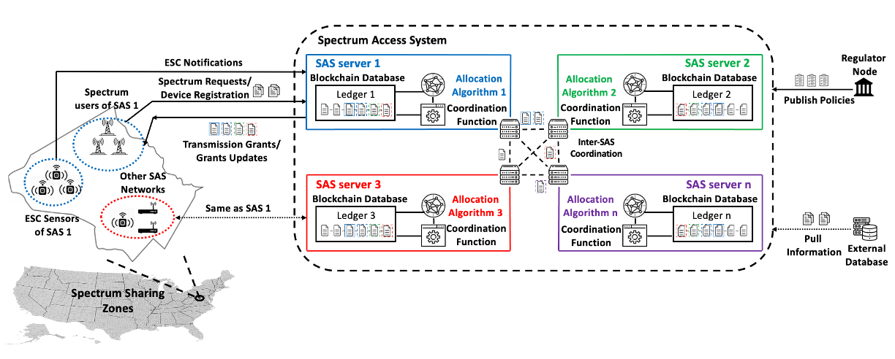

Blockchain for Wireless & 5G/nextG Mobile Networks

A Trustworthy and Robust Inter-SAS Coordination Scheme
This research is a part of an interdisciplinary effort to address real challenges in 5G/nextG communications. It targets the fundamental security of Spectrum Access System (SAS), a widely recognized framework for dynamic spectrum sharing in the 5G era. The current SAS designated by the FCC follows a centralized service model which, however, faces various security challenges. Particularly, the existing coordination procedure, namely CPAS, executes a daily full-dump-style record exchange between SAS administrators. The malicious SAS administrators can disrupt the system by sending conflict messages to others and abusing the system to obtain excessive spectrum resources. In response, we propose TriSAS—a new inter-SAS coordination mechanism to facilitate secure, efficient, and fair spectrum allocation and SAS operations. TriSAS decomposes the coordination process into two phases including input synchronization and decision finalization. The input synchronization phase leverages off-the-shelf Byzantine fault-tolerant consensus protocol to ensure all participants share a common input set, while the decision finalization phase allows allocation proposers to propose different allocations via their proprietary allocation algorithms, which are evaluated and voted by a customized designed allocation evaluation algorithm (AEA). The allocation attaining the highest evaluation score and favored by 2/3 majority of the total population is elected as the final allocation result. TriSAS ensures the operation security and correctness of the coordination mechanism when the malicious participants are less than one-third of the total population. TriSAS also ensures information transparency and fairness by storing all the records in an immutable ledger.
Proposed Work
◾ Extend the proposed scheme to a large scale spectrum scheduling system with more SAS administrators.
◾ Explore the use of blockchain and distributed consensus for mobile data and identity management in security/privacy-aware 5G/nextG scenarios.